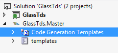
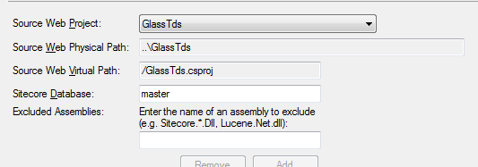
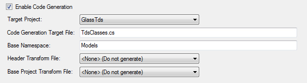
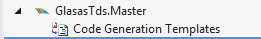
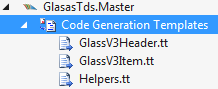
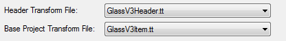
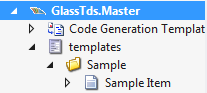
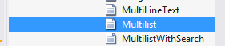
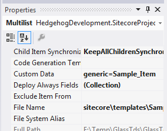
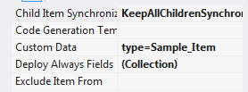

In this tutorial we will look at how you can used TDS to automatically generate classes that work with Glass.Mapper based on the templates you have stored in TDS.
For this demo I have a very simple project setup that includes my main website project and my TDS project:
First we need to configure the project, open the properties window for the TDS project and set the target web project:
Next click Code Generation and then set the following properties:
At this time you can't set the Header Transform File or the Base Project Transform File.
When you clicked the Enable Code Generation checkbox you should have seen an additional node appear in the TDS project:
Download the following three files:
And copy and paste them beneath the Code Generation Templates node:
Now open the TDS project properties page again and configure the Header Transform File and the Base Project Transform File:
We can now add some templates to our solution:
TDS will automatically update and generate a new code file which will contain the generated classes.
The code generation will generate a class and an interface for each template in Sitecore. The interface generated will contain all the fields for the template:
/// <summary>
/// ISample_Item Interface
/// <para>Path: /sitecore/templates/Sample/Sample Item</para>
/// <para>ID: 76036f5e-cbce-46d1-af0a-4143f9b557aa</para>
/// </summary>
[SitecoreType(TemplateId=Sample_Item.TemplateIdString)]
public partial interface ISample_Item : IGlassBase
{
/// <summary>
/// The Text field.
/// <para>Field Type: Rich Text</para>
/// <para>Field ID: a60acd61-a6db-4182-8329-c957982cec74</para>
/// <para>Custom Data: </para>
/// </summary>
[SitecoreField(Sample_Item.TextFieldName)]
string Text {get; set;}
/// <summary>
/// The Title field.
/// <para>Field Type: text</para>
/// <para>Field ID: 75577384-3c97-45da-a847-81b00500e250</para>
/// <para>Custom Data: </para>
/// </summary>
[SitecoreField(Sample_Item.TitleFieldName)]
string Title {get; set;}
}
The class generated is the concrete version of this interface and also contains constants for field names, field IDs, template name and template Id:
/// <summary>
/// Sample_Item
/// <para>Path: /sitecore/templates/Sample/Sample Item</para>
/// <para>ID: 76036f5e-cbce-46d1-af0a-4143f9b557aa</para>
/// </summary>
[SitecoreType(TemplateId=Sample_Item.TemplateIdString)]
public partial class Sample_Item : GlassBase, ISample_Item
{
public const string TemplateIdString = "76036f5e-cbce-46d1-af0a-4143f9b557aa";
public static readonly ID TemplateId = new ID(TemplateIdString);
public const string TemplateName = "Sample Item";
/// <summary>
/// The Text field.
/// <para>Field Type: Rich Text</para>
/// <para>Field ID: a60acd61-a6db-4182-8329-c957982cec74</para>
/// <para>Custom Data: </para>
/// </summary>
[global::System.CodeDom.Compiler.GeneratedCodeAttribute("Team Development for Sitecore - GlassItem.tt", "1.0")]
[SitecoreField(Sample_Item.TextFieldName)]
public virtual string Text {get; set;}
public static readonly ID TextFieldId = new ID("a60acd61-a6db-4182-8329-c957982cec74");
public const string TextFieldName = "Text";
/// <summary>
/// The Title field.
/// <para>Field Type: text</para>
/// <para>Field ID: 75577384-3c97-45da-a847-81b00500e250</para>
/// <para>Custom Data: </para>
/// </summary>
[global::System.CodeDom.Compiler.GeneratedCodeAttribute("Team Development for Sitecore - GlassItem.tt", "1.0")]
[SitecoreField(Sample_Item.TitleFieldName)]
public virtual string Title {get; set;}
public static readonly ID TitleFieldId = new ID("75577384-3c97-45da-a847-81b00500e250");
public const string TitleFieldName = "Title";
}
You can then use these interfaces and class as you would any other custom built class.
The IGlassBase and the GlassBase class inherited by all interfaces and classes respectively, it contains the following basic properties:
All the classes and interfaces generated are partial, this means that you can easily extended them in a separate file without worrying about having your changes overwritten the next time the code gets generated. For example I might want every item to have a URL property, I can do this by extending the IGlassBase interface and GlassBase class:
public partial interface IGlassBase{
[SitecoreInfo(SitecoreInfoType.Url)]
string Url{ get; }
}
public abstract partial class GlassBase : IGlassBase{
[SitecoreInfo(SitecoreInfoType.Url)]
string Url{ get; }
}
By default the return type of a property is determined by a switch statement that can be found in the GlassV3Item.tt file, this will work most of the time but it might not return the type you want. For example you may have a MultiList field by default the code generation template will return this field as an enumerable of guids:
[global::System.CodeDom.Compiler.GeneratedCodeAttribute("Team Development for Sitecore - GlassItem.tt", "1.0")]
[SitecoreField(Test.MultilistsFieldName)]
public virtual IEnumerable<Guid> Multilists {get; set;}
However you might want this to be returned as another Glass.Mapper managed type, we can do this by finding the field in the TDS content tree:
Open the properties panel for this item and enter into the Custom Data field "generic={type}" where "{type}" is the .Net type you want returned:
If we manually re-generate the code the property now returns our custom type:
[global::System.CodeDom.Compiler.GeneratedCodeAttribute("Team Development for Sitecore - GlassItem.tt", "1.0")]
[SitecoreField(Test.MultilistsFieldName)]
public virtual IEnumerable<Sample_Item> Multilists {get; set;}
This can also be applied to properties that aren't enumerations, for example a drop link field. For properties that aren't enumerations we need to enter into the Custom Data field "type={type}":
When the code is regenerated we see that the property returns out custom type:
[global::System.CodeDom.Compiler.GeneratedCodeAttribute("Team Development for Sitecore - GlassItem.tt", "1.0")]
[SitecoreField(Test.DroplinkFieldName)]
public virtual Sample_Item Droplink {get; set;}